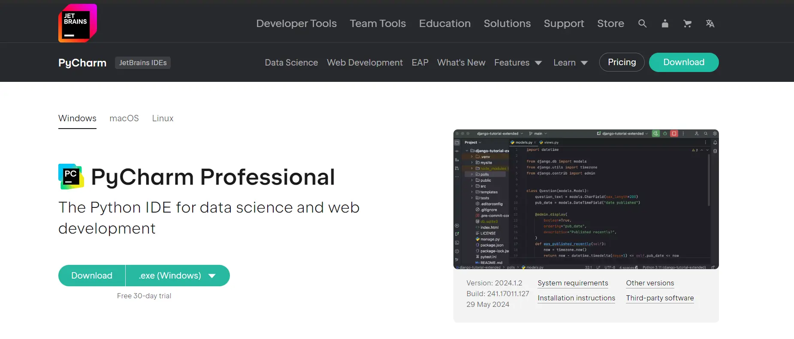
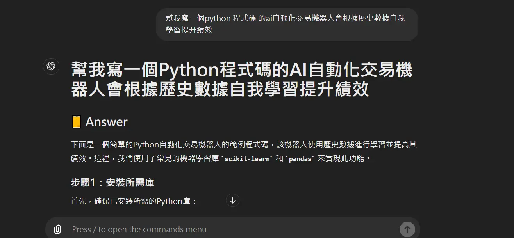
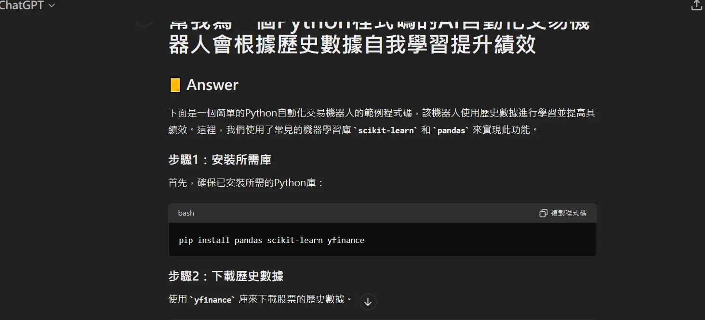
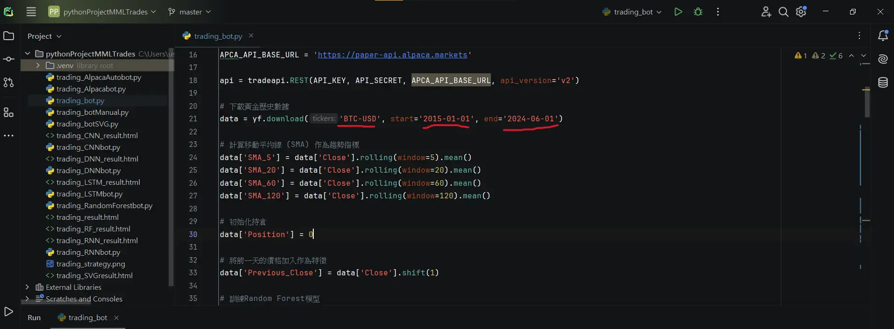
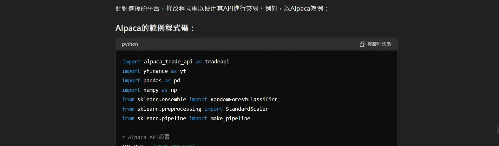
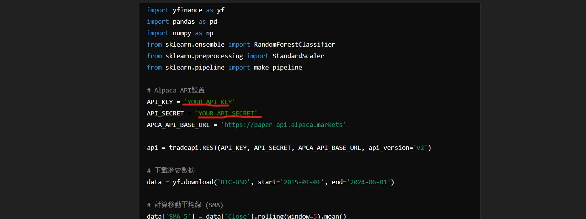
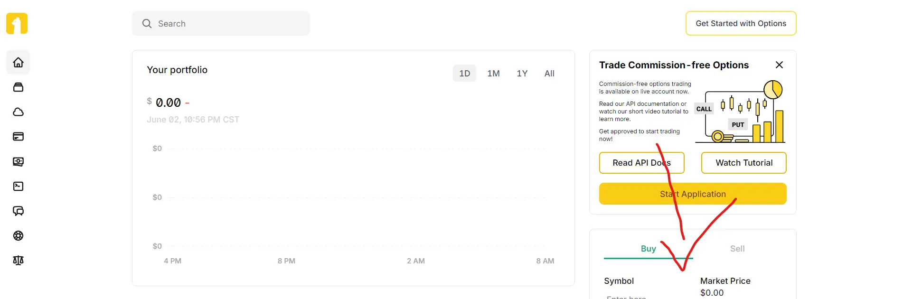
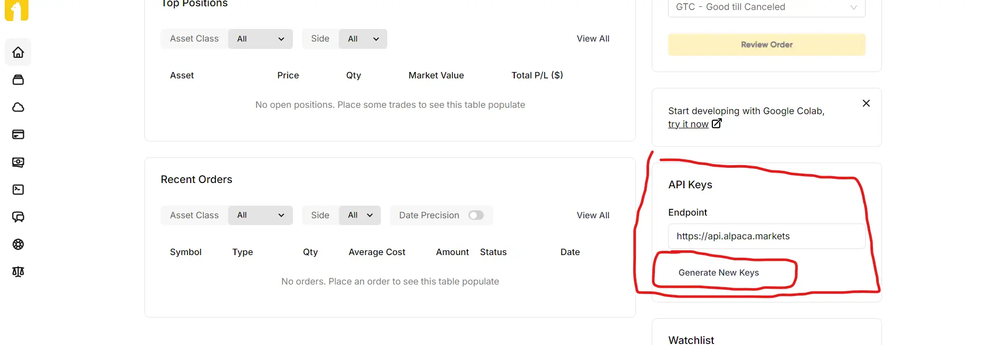
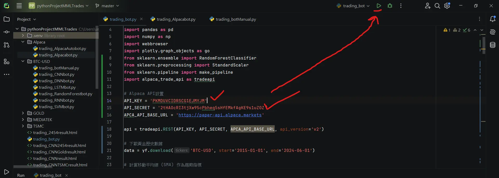
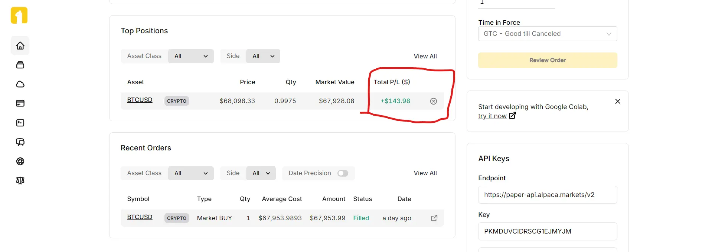

在物價飛漲薪水沒漲買房需要不吃不喝至少20年都不一定能買到房,投資理財是能讓口袋的錢變多的方法之一,如果不理財,財就會不理你
本交易機器人 交易策略 分為3種 :
移動平均,格蘭碧8大法則 和 無任何交易策略 (機器人ai自主學習)
其中這三種交易策略裡面還有細分交易週期 分為: 日內波與波段
基於黃金交叉與死亡交叉和日內波趨勢追蹤策略
主要概念是利用
短期移動平均線（如5天、20天）
和長期移動平均線（如60天、120天）之間的交叉點做買入,賣出的決策
其中交易週期分為 短週期交易 與 長週期交易
短週期交易採用 日內波套用移動平均法的策略 在一天內多次交易
長週期交易採用 波段交易套用移動平均法 並於每周做一次交易
| 交叉條件 | 交易信號 | 策略說明 |
|---|---|---|
| 當日收盤價超過長期移動平均線（120天）且超過前一天的收盤價1.005倍 | 買入 | 捕捉股價上漲趨勢，並實現利潤。 |
| 當日收盤價跌破長期移動平均線且同時跌破短期移動平均線（5天、20天） | 賣出 | 捕捉股價下跌趨勢，並實現利潤。 |
| 模型 | 描述 | 應用 |
|---|---|---|
| 支持向量機（SVM） | 支持向量機 (SVM) 是一種監督式學習模型，可以用於分類和回歸任務。 | 預測日內波的方向或幅度。 |
| 隨機森林（Random Forest） | 隨機森林 (RF) 是一種集成學習算法，結合了多個決策樹，可用於分類和回歸。 | 對於複雜的非線性關係表現良好。 |
| 深度神經網絡（DNN） | 深度神經網絡（DNN）是一種深度學習模型，具有很強的擬合能力和對於非線性關係的表徵能力。 | 捕捉日內波的複雜模式。 |
| 長短期記憶網絡（LSTM） | 長短期記憶網絡（LSTM) 是一種循環神經網絡的變體，特別適合處理時間序列數據。 | 如果日內波具有時間相依性，LSTM 可能是一個很好的選擇。 |
| 卷積神經網絡（CNN） | 卷積神經網絡（CNN）通常用於圖像處理，但對具有局部相關性的時間序列數據，如天氣預測或股票市場中的技術指標，也可以取得不錯的效果。 | 處理具有局部相關性的序列數據。 |
| 遞歸神經網絡（RNN） | 除了長短期記憶網絡（LSTM) 外，一般的 遞歸神經網絡（RNN）也可以應用於時間序列數據。它的結構比較簡單，訓練速度較快，但對於長期依賴關係的捕捉能力稍遜於LSTM。 | 處理時間序列數據，尤其是長期依賴關係的捕捉。 |
輸入指令全部程式碼由生成式AI ChatGPT產生
建置環境在IDE PyCharm 建置執行
 安裝程式需要用到的套件相關
| 套件名稱 | 功能用途 | Pip 安裝指令 |
|---|---|---|
| yfinance | 用於下載歷史金融數據。 | pip install yfinance |
| pandas | 用於數據操作和分析。 | pip install pandas |
| numpy | 用於數值計算。 | pip install numpy |
| plotly | 用於交互式繪圖。 | pip install plotly |
| scikit-learn | 用於機器學習模型和數據預處理，包括建立隨機森林模型。 | pip install scikit-learn |
| alpaca-trade-api | 用於與 Alpaca 交易 API 進行交互。 | pip install alpaca-trade-api |
| tensorflow | 用於構建和訓練神經網絡模型。 | pip install tensorflow |
複製程式碼到IDE裡
導入程式碼後
確認 交易商品,交易區間(起始日到結束日)
在執行程式碼
執行結果:
累積收益代表資產增加了多少%
數字1代表初始值(原資金)
上面數字顯示:104.19 代表增加了103.19%的收益
導入訓練模型

執行結果
| 方法 | 比特幣BTC-USD | 黃金GOLD | 台積電2330 | 聯發科2454 |
|---|---|---|---|---|
| 移動平均 | 104.19% | 1.39% | 1.21% | 0.96% |
| 捲積神經網路CNN | 34662326589080% | 367700.44% | 23565.24% | 590787.97% |
| 深度神經網路DNN | 3.28% | 1% | 1% | 1% |
| 長短期記憶網路LSTM | 1% | 1% | 1% | 1% |
| 隨機森林RF | 3444098470884080345881737370271744% | 96593950224196704% | 94649417192.90% | 4650218429526605.00% |
| 遞歸神經網絡RNN | 1.86% | 1.04% | 1.27% | 1.34% |
| 支持向量機SVM | 120.8% | 1.39% | 1.21% | 0.96% |
選擇任一交易平台
複製程式碼到IDE編輯器裡
註冊帳號
程式碼要求api及api密鑰 以便連接到平台
註冊好後 到交易頁面上 注意右手邊並往下尋找API KEYS
按下GENERATE NEW KEYS 生產鑰匙 就會生產API 及 相對應API密鑰
拿到API 及 API 密鑰 回到IDE編輯器 放到對應欄位 並執行程式碼
執行後 程式就會開始自動依相對應的策略進行買賣